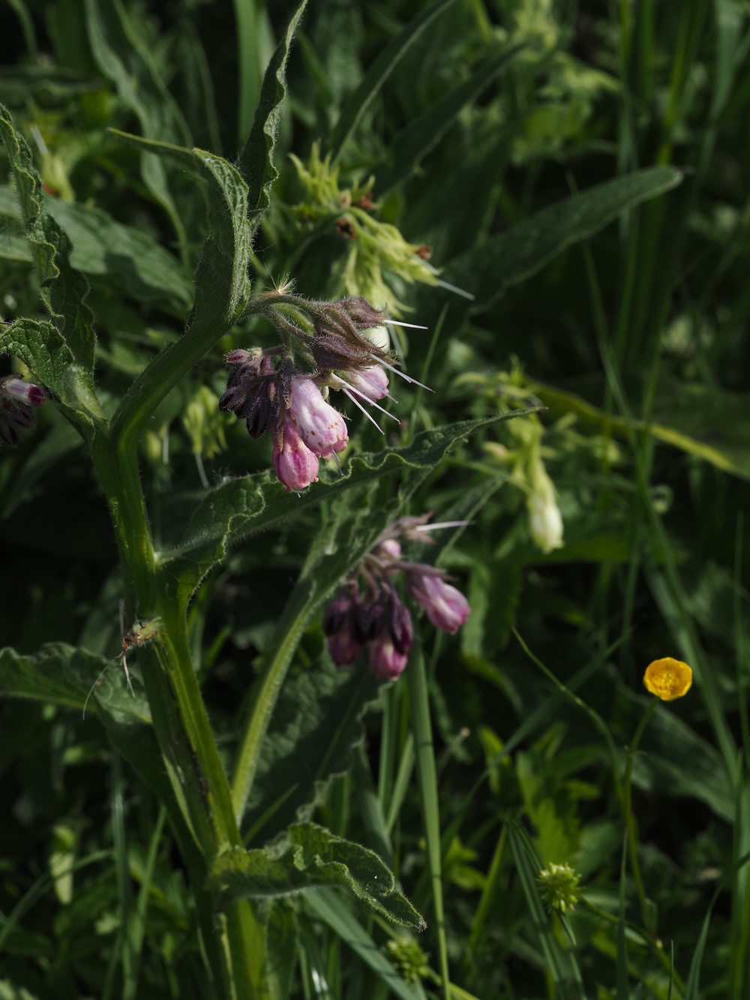
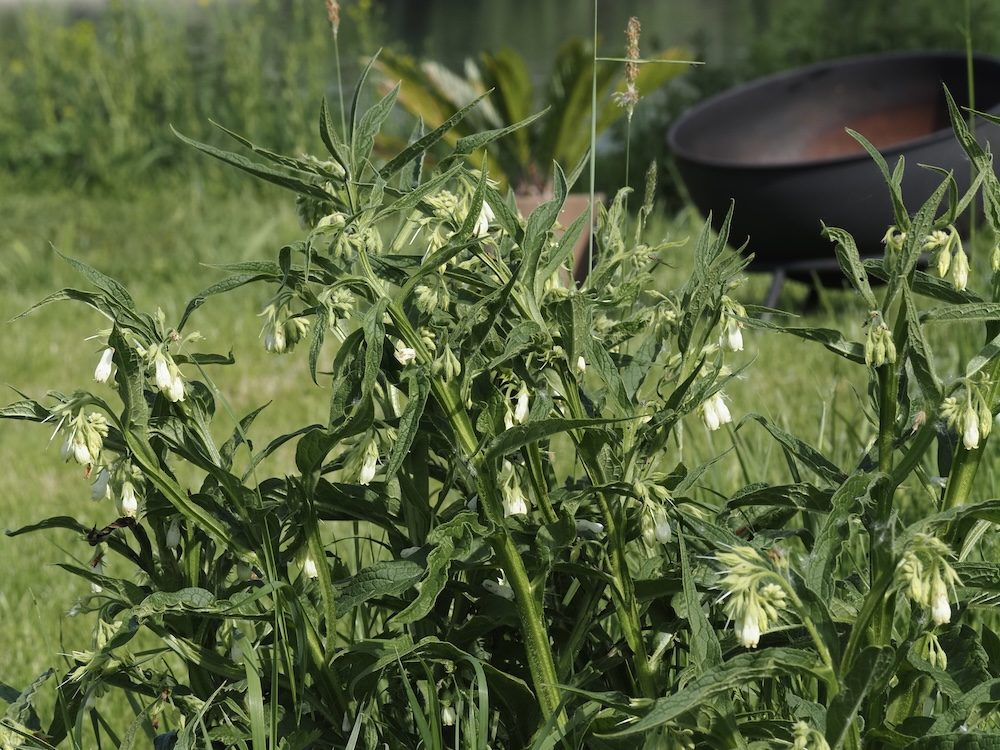

Knochen heilen?
Der deutsche Name „Beinwell“ kommt vom althochdeutschen „bein“ = Knochen + „walken“ = heilen. Tatsächlich wurde der Beinwell jahrhundertelang gegen Knochenbrüche, Verstauchungen und Prellungen als Salbe oder Umschlag verwendet. Allantoin, einer der Wirkstoffe, ist bis heute in Beinwell-Salben enthalten und nachweislich wundheilend. Die Wurzel enthält aber Pyrrolizidinalkaloide — daher: nicht intern verwenden!
Die Knospen mit den Farbwechseln
Schau dir die Blüten genauer an: Die jungen Knospen sind rosa-purpurn, die offenen Blüten dann blau-violett, manchmal cremeweißlich (es gibt verschiedene Farbvarianten). Dieser Farbwechsel ist typisch für Raublattgewächse — die Blüte gibt Bestäubern ein Signal, was lohnt: die rosa Knospen sind „noch nicht offen“, die blauen „offen mit Nektar“.